A History of Computer Graphics · All chapters.
Studios and Films
The companies that made computer-generated imagery (CGI) for film, from the first commercial studios of the 1970s to the visual-effects (VFX) and animation studios of today, and a timeline of films with the technical first or landmark each is known for, expanding CGI studios and films in A History of Computer Graphics. Where sources disagree about a “first,” the claim is narrowed to what they support and the disagreement is named.
The first generation, 1962 to 1987
Before 1980 a frame of shaded 3D imagery took minutes to hours on a mainframe or minicomputer and had to be photographed onto film by a custom film recorder. A handful of companies built that whole chain themselves, sold it to advertisers and television networks, and took the occasional film job. Most of them closed or were absorbed by 1987.
Information International Inc. (III, Triple-I), Los Angeles
Founded in 1962 to make digital film scanners and image-processing equipment, III formed a motion-picture group under John Whitney Jr. and Gary Demos in the 1970s. Its prototype image-processing system made the pixelated point of view of the robot gunslinger in Westworld (1973): Whitney’s own account in American Cinematographer describes each frame as 3,600 rectangles at about one minute of computing a frame, and names III staff Russ Ham and Dean Anschultz. The group went on to Futureworld (1976, a digitized head of Peter Fonda), Looker (1981, a digitized actress) and Tron (1982), and made a test X-wing fighter for George Lucas. Its equipment was its own: PDP-10 computers, the Foonly F-1, a 1,000-line frame buffer and the PFR-80 film recorder, with the Tranew renderer (Jim Blinn, Frank Crow and others) and Craig Reynolds’s ASAS animation language. III called the process Digital Scene Simulation. Whitney and Demos left in 1981, and the graphics group closed soon after; several of its staff formed the Symbolics Graphics Division.
MAGI (Mathematical Applications Group Inc.), Elmsford, New York
MAGI was founded in 1966 to compute nuclear-radiation exposure. Its engineer Robert Goldstein traced radiation from a source through solid geometry; turned around to trace light from the eye, the same program became SynthaVision (published by Goldstein and Nagel in 1971), one of the first ray-casting renderers. Objects were built from solid primitives combined with Boolean operators (constructive solid geometry). The graphics business started in 1972. MAGI was the largest of the four Tron vendors, with about 15 minutes of the film’s computer imagery (light cycles, recognizers, tanks), and afterwards hired Ken Perlin, whose noise function later won an Academy Technical Achievement Award (1997). Six MAGI veterans founded Blue Sky Studios in 1987.
Robert Abel and Associates, Los Angeles
Bob Abel and Con Pederson founded the studio in 1971 for motion-control and slit-scan effects in commercials and network promotions. It moved to vector graphics on Evans & Sutherland displays (the opening of Disney’s The Black Hole, 1979) and then to raster rendering through its software division, Abel Image Research, whose programmers included Bill Kovacs and Roy Hall. Abel animated parts of Tron and many award-winning commercials, among them Brilliance, a chrome robot for the Canned Food Information Council. Omnibus Computer Graphics bought the studio in October 1986.
Digital Effects Inc., New York
Founded in 1978 by Judson Rosebush, Jeff Kleiser and five partners, it made the title sequence and the Bit character for Tron and closed in 1986.
Digital Productions, Los Angeles
Whitney and Demos founded Digital Productions in 1981, financed by Control Data Corporation, around a leased Cray supercomputer, a Cray-1S replaced by a Cray X-MP in 1983. Its first large job was The Last Starfighter (1984): roughly 25 minutes of computer-graphics (CG) spaceships and battles rendered at 2,000 by 2,560 pixels, in place of physical models (accounts vary between about 250 and 300 shots). Demos later wrote that it was the first time highly detailed CG images were integrated with live action as realistic scene elements rather than as monitor graphics. It also made the Jupiter sequence of 2010 (1984). Whitney and Demos received an Academy Scientific and Engineering Award for the photorealistic simulation of motion picture photography by computer. The Cray was ruinously expensive; Omnibus took over the company in June 1986.
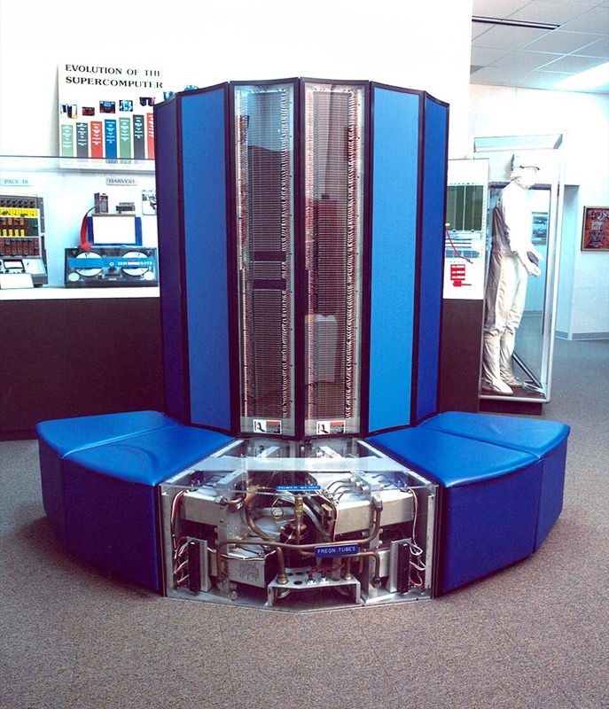
The 1987 collapse
Omnibus Computer Graphics of Toronto bought Digital Productions (June 1986) and Abel (October 1986, $7.3 million) to dominate the market. By 1987 it was in default on about $30 million of debt and the three studios closed together (accounts give dates from March to May 1987). Their staff founded or joined the next generation: Rhythm & Hues, Metrolight, deGraf/Wahrman, and Sony Pictures Imageworks among others; Omnibus’s PRISMS software went to Kim Davidson and Greg Hermanovic, who founded Side Effects Software and later wrote Houdini.
New York Institute of Technology Computer Graphics Laboratory (NYIT CGL)
Alexander Schure, NYIT’s founder, set up the lab on Long Island in 1974 to make a computer-animated feature, and hired Edwin Catmull from Utah to run it. Alvy Ray Smith, David DiFrancesco, Lance Williams, Fred Parke, Garland Stern and others followed. The lab produced the integral alpha channel (Catmull and Smith), the Paint and Tween programs, shadow maps (Williams 1978), mipmaps (Williams 1983) and Catmull-Clark subdivision (1978); the planned feature, The Works, was never finished. In 1979 George Lucas recruited Catmull and much of the team for Lucasfilm.
Pacific Data Images (PDI), Sunnyvale
Carl Rosendahl founded PDI in 1980, joined by Richard Chuang (1981) and Glenn Entis (1982). It wrote its own software in C, rendered direct to video for television graphics, and by its own account held over half of that market in 1985. PDI built Waldo C. Graphic for Jim Henson (1988), a CG puppet driven in real time by a puppeteer, and the face morphs in Michael Jackson’s Black or White video (1991), whose feature-based morphing algorithm Beier and Neely published in 1992. Its later history is under DreamWorks below.
Lucasfilm, ILM and Pixar
Industrial Light & Magic (ILM)
Lucas founded ILM in 1975, in a warehouse in Van Nuys, California, to make the effects for Star Wars; John Dykstra ran it, and it moved to San Rafael after the film. ILM’s own history states that from 1980 to 1992 its work received 18 Academy Award nominations and, with one exception, won the visual-effects Oscar every year. In the computer era it delivered the stained-glass knight of Young Sherlock Holmes (1985, with the Lucasfilm Computer Division), the water pseudopod of The Abyss (1989), the liquid-metal T-1000 of Terminator 2 (1991), the dinosaurs of Jurassic Park (1993), Davy Jones in Pirates of the Caribbean: Dead Man’s Chest (2006) and the StageCraft light-emitting diode (LED) volume of The Mandalorian (2019). Photoshop began there: John Knoll, an ILM motion-control technician, and his brother Thomas wrote it in 1987. Visual-effects supervisor Dennis Muren led much of the transition from models to CG. Disney agreed to buy Lucasfilm, ILM included, for $4.05 billion in October 2012. ILM counts 16 Oscar wins from 50 nominations.
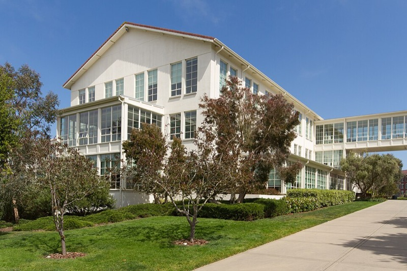
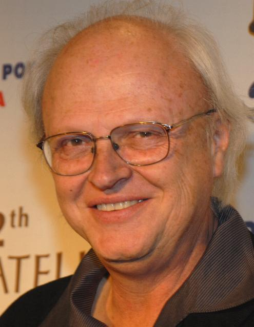
The Lucasfilm Computer Division, 1979 to 1986
Catmull’s group was hired to bring digital methods to film: a laser film scanner and recorder (DiFrancesco), digital compositing, digital editing (EditDroid) and audio (SoundDroid), and a renderer fit for film. Its papers set the rendering agenda of the 1980s: particle systems (Reeves 1983), the A-buffer (Carpenter 1984), distributed ray tracing (Cook, Porter, Carpenter 1984), shade trees (Cook 1984), compositing algebra (Porter and Duff 1984) and the Reyes architecture (Cook, Carpenter, Catmull 1987). Its first film work was the Genesis sequence of Star Trek II: The Wrath of Khan (1982), about a minute of entirely computer-generated imagery with fractal mountains by Loren Carpenter and a wall of fire made of particle systems by William Reeves. John Lasseter, who had left Disney, animated The Adventures of André and Wally B., shown at the 1984 conference of the Association for Computing Machinery’s Special Interest Group on Computer Graphics (SIGGRAPH).

Pixar
When Lucas decided to sell the division, Steve Jobs paid Lucasfilm $5 million for its technology and put another $5 million into a new company; the papers were signed at the end of January 1986, with Catmull as president and Smith as vice president, and about 40 staff moved over. For five years Pixar was mainly a hardware and software company: it sold the Pixar Image Computer, published the RenderMan Interface (1988) and licensed RenderMan from 1989, and paid for Lasseter’s small animation group with commercials. The group’s shorts carried the reputation: Luxo Jr. (1986) was the first 3D computer-animated film nominated for an Academy Award, and Tin Toy (1988) won the animated-short Oscar, apparently the first computer-animated film to do so. Pixar also built the Computer Animation Production System (CAPS) for Disney (below). In 1991 Disney contracted Pixar for a feature, and Toy Story (1995) became the first feature-length film made entirely with computer animation. Pixar went public the same year. Disney agreed to buy Pixar for $7.4 billion in stock in January 2006 and closed in May 2006; Catmull became president of both Pixar and Walt Disney Animation Studios.
Pixar’s renderer has an unusual record. RenderMan received an Academy Scientific and Engineering Award in 1993 and, in 2001, an Award of Merit (an Oscar statuette) to Catmull, Carpenter and Robert Cook, the first for a software package. Geri’s Game (1997) introduced subdivision surfaces to production (DeRose, Kass and Truong 1998). RenderMan was rebuilt as a path tracer in the 2010s: Monsters University (2013) used ray-traced global illumination, and Finding Dory (2016) was the first Pixar feature in which visibility, shadows, reflections, indirect light and subsurface scattering were all computed by path tracing.
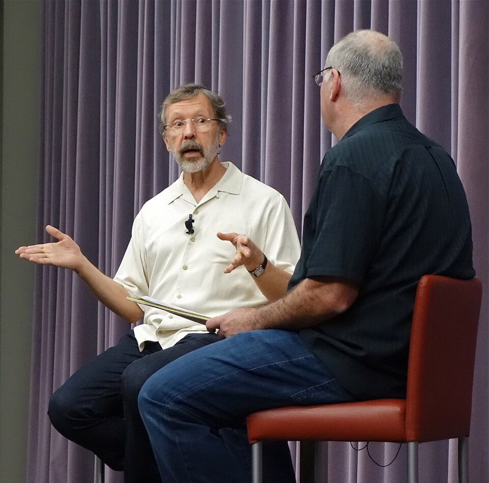
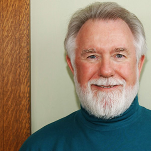

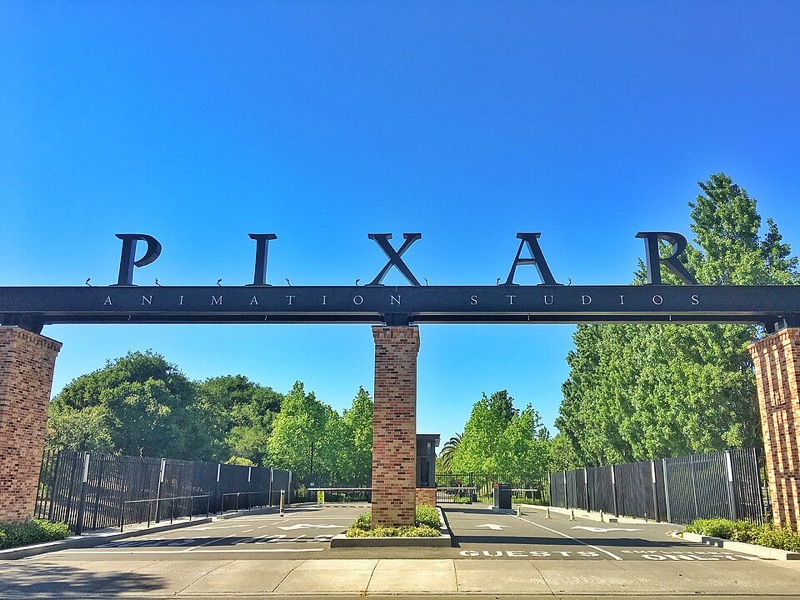
Walt Disney Animation Studios: CAPS to Hyperion
CAPS, built by Pixar and Disney in the late 1980s, scanned the animators’ drawings and replaced hand inking, painting and the camera stand with digital ink, paint and compositing. It was first used for a single shot, the closing rainbow of The Little Mermaid (1989); The Rescuers Down Under (1990) was made entirely with it, which Guinness lists as the first fully digital feature film. CAPS also let Disney mix 3D backgrounds with drawn characters, as in the ballroom of Beauty and the Beast (1991), the first animated film nominated for Best Picture. The CAPS team received an Academy Scientific and Engineering Award in 1992. The studio turned to fully CG features in the 2000s; its research group published the Disney principled bidirectional reflectance distribution function (BRDF; Burley 2012) and the material point method (MPM) for snow (Stomakhin et al. 2013), linked to Frozen (2013). Its own path tracer, Hyperion, has rendered all of the studio’s CG images since Big Hero 6 (2014).
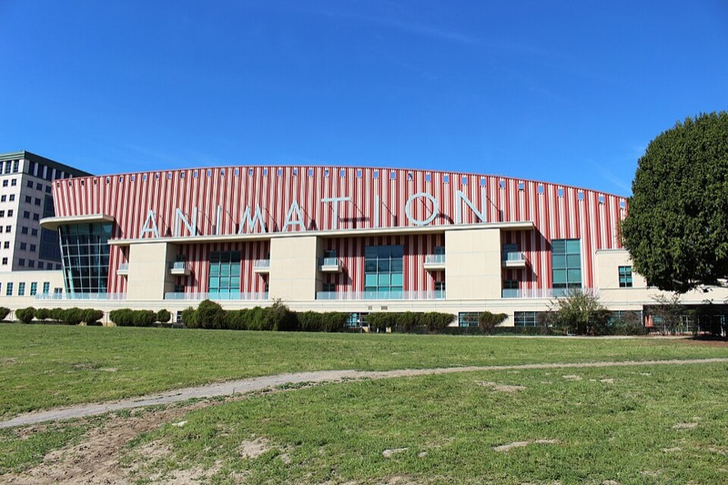
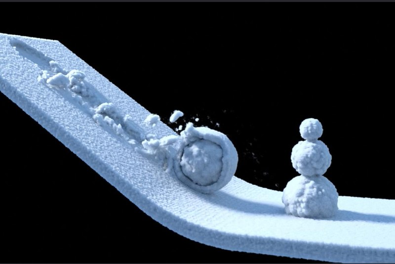
Feature-animation studios
PDI/DreamWorks
In 1996 PDI signed a co-production deal with the new DreamWorks SKG (one later account dates the first stake to 1995). Its first feature, Antz (1998), opened a month before Pixar’s A Bug’s Life. DreamWorks took majority control in February 2000, and Shrek (2001) won the first Academy Award for Best Animated Feature. PDI also won Academy technical awards for its animation system (1997) and for Nick Foster’s fluid tools (1998). DreamWorks Animation closed the Northern California studio in its 2015 restructuring.
Blue Sky Studios
Founded in February 1987 by six people who had met at MAGI on Tron (Chris Wedge, Michael Ferraro, Carl Ludwig, Alison Brown, David Brown and Eugene Troubetzkoy), Blue Sky wrote its own ray-tracing renderer, CGI Studio, with a strong emphasis on physically based light. Wedge’s short Bunny won the animated-short Oscar in 1999. Fox acquired control through its effects company VIFX (1997) and kept Blue Sky when it sold VIFX in 1999; Ice Age followed in 2002. Disney, which inherited the studio when it bought 21st Century Fox, closed it in April 2021.
Illumination Mac Guff
Chris Meledandri founded Illumination in 2007. Its films were animated by Mac Guff in Paris, starting with Despicable Me (2010); in late 2011 Universal bought Mac Guff’s animation unit for Illumination and renamed it Illumination Mac Guff.
Animal Logic
Zareh Nalbandian and Chris Godfrey founded Animal Logic in Sydney in 1991 as a VFX and design studio. Its first CG feature, George Miller’s Happy Feet (2006), won the Animated Feature Oscar. Netflix agreed to buy the studio in July 2022.
Visual-effects houses
Digital Domain
James Cameron, makeup-effects artist Stan Winston and former ILM general manager Scott Ross founded Digital Domain in Venice, California, in 1993. Its Titanic (1997) work, a CG ship with motion-captured digital passengers, won the visual-effects Oscar, as did The Curious Case of Benjamin Button (2008), whose CG head carried Brad Pitt’s performance as the aged Benjamin.
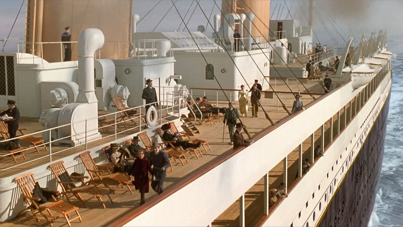
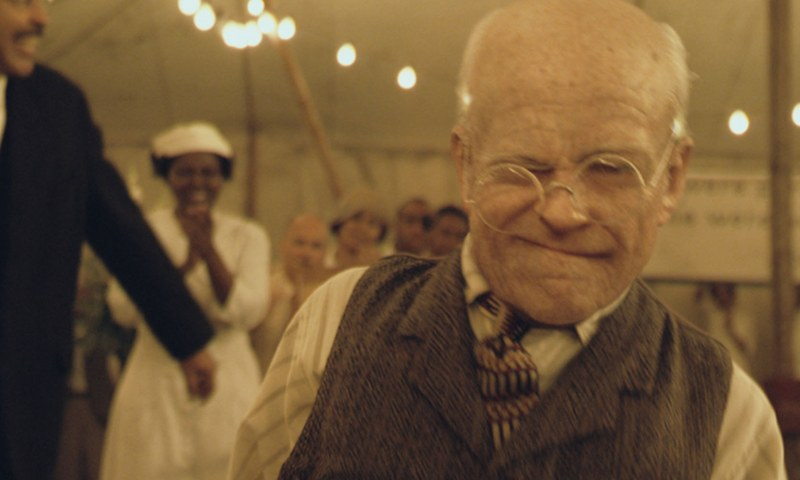
Weta Digital (Wētā FX)
Peter Jackson, Richard Taylor and Jamie Selkirk founded Weta Digital in Wellington, New Zealand, in 1993. For The Lord of the Rings (2001 to 2003) Stephen Regelous wrote Massive, which animated battle crowds as autonomous agents, each with a small rule-based brain (Scientific and Engineering Award, 2004), and the studio built Gollum from Andy Serkis’s captured performance. Weta won the visual-effects Oscar for all three films, then for King Kong, Avatar (2009) and Avatar: The Way of Water (2022), and wrote Manuka, a spectral path tracer (2018). In 2021 Unity bought Weta’s software tools and engineers for $1.625 billion; the effects business stayed with Jackson and became Wētā FX in March 2022.
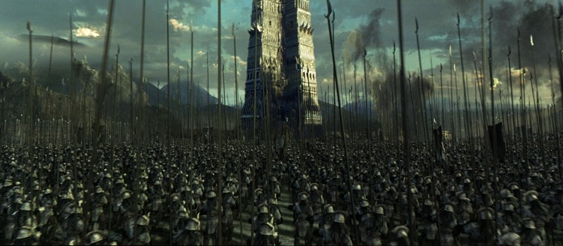
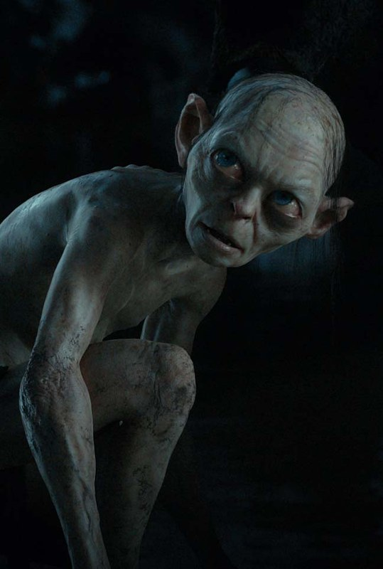
Sony Pictures Imageworks
Sony formed an in-house effects unit in Culver City in 1992 and named it Imageworks in 1993; Ken Ralston, from ILM, led its expansion from 1995. Imageworks won the visual-effects Oscar for Spider-Man 2 (2004), made The Polar Express (2004) with full-body and face performance capture of the cast, and, with Solid Angle, developed the Arnold path tracer, whose Monster House (2006) was the first feature-length film rendered with path tracing. It moved its headquarters to Vancouver in 2014.
Rhythm & Hues
Former Abel staff founded Rhythm & Hues in Los Angeles in 1987. It won the visual-effects Oscar for Babe (1995), with its talking animals, and again for Life of Pi (2012); the second award came in February 2013, days after the company filed for bankruptcy.
Framestore
Founded in London in 1986, Framestore won the visual-effects Oscar for Gravity (2013): actors were lit inside a box of 196 LED panels that displayed the rendered environment, so the light on their faces matched the CG world around them.
Double Negative (DNEG)
Double Negative was founded in London in 1998, merged with Prime Focus World in 2014 and renamed itself DNEG in 2018. For Interstellar (2014) it wrote DNGR, the Double Negative Gravitational Renderer, which traces bundles of light rays through the curved spacetime of a spinning black hole; the method was published with physicist Kip Thorne (James et al. 2015), and the film won the visual-effects Oscar.

MPC
The Moving Picture Company, a London studio, created most of the animals and environments of The Jungle Book (2016), whose visual-effects Oscar it shared with Weta Digital’s supervisors. Its parent, Technicolor Creative Studios, went into administration in February 2025.
Software from the studios
Most commercial 3D packages used in film came from a studio or were proven on a film first.
| package | origin | film use and fate |
|---|---|---|
| RenderMan | Lucasfilm Reyes renderer; Pixar, interface 1988, product 1989 | the standard film renderer of the 1990s and 2000s; path tracer from the 2010s; first software to receive an Oscar statuette (2001) |
| Wavefront | Santa Barbara, 1984 (Bill Kovacs, from Abel) | bought Abel Image Research; merged into Alias|Wavefront, 1995 |
| Alias | Toronto, 1983 | used by ILM on The Abyss and Terminator 2; PowerAnimator on Jurassic Park |
| Maya | Alias|Wavefront (owned by Silicon Graphics), shipped February 1998 | Autodesk bought Alias in 2005 to 2006; still a film standard |
| Softimage | Montreal, 1986 (Daniel Langlois) | on Jurassic Park; owned by Microsoft (1994), Avid (1998), Autodesk (2008); last release 2015 |
| Houdini | Side Effects Software, Toronto, 1987, from Omnibus’s PRISMS; Houdini 1.0 in 1996 | procedural effects: destruction, fluids, crowds |
| Massive | Stephen Regelous at Weta Digital | crowd agents for The Lord of the Rings; Academy award 2004 |
| Arnold | Marcos Fajardo (Solid Angle) with Sony Pictures Imageworks | first path-traced feature, Monster House (2006); Autodesk bought Solid Angle in 2016; Academy award 2017 |
| Hyperion | Walt Disney Animation Studios | all of the studio’s CG since Big Hero 6 (2014) |
| Manuka | Weta Digital | spectral path tracer, described in 2018 |
Films and their firsts
Each “first” is worded as narrowly as the sources allow; Oscars are dated by ceremony year.
| year | film | studio | first or landmark |
|---|---|---|---|
| 1973 | Westworld | III | the robot’s pixelated point of view; generally cited as the first digital image processing in a feature film |
| 1976 | Futureworld | III; Catmull and Parke (Utah) | among the first 3D computer-generated images in a feature: Catmull’s animated hand (1972), Parke’s face and a digitized head of Peter Fonda (some accounts give Star Wars or Looker the 3D first instead) |
| 1977 | Star Wars | ILM; Larry Cuba (University of Illinois at Chicago) | wireframe animation of the Death Star trench for the briefing scene, programmed in Tom DeFanti’s GRASS language |
| 1979 | Alien | System Simulation Ltd, London (Brian Wyvill) | wireframe orbit and descent displays on the ship’s monitors |
| 1981 | Looker | III | a digitized actress as a 3D model; called by one participant the first shaded 3D CG in a feature |
| 1982 | Tron | MAGI, III, Abel, Digital Effects | the first feature to use 3D CG extensively: about 15 minutes from MAGI alone, and CG backgrounds in over 200 scenes |
| 1982 | Star Trek II: The Wrath of Khan | Lucasfilm Computer Division | the Genesis sequence, one of the earliest entirely computer-generated sequences in a feature: fractal terrain and particle systems |
| 1984 | The Last Starfighter | Digital Productions | about 25 minutes of CG spaceships in place of models, rendered on a Cray X-MP; realistic CG scene elements in live action |
| 1985 | Young Sherlock Holmes | ILM; Lucasfilm Computer Division | the stained-glass knight, cited by ILM as the first all-CG character in a feature film (animated by John Lasseter) |
| 1986 | Luxo Jr. (short) | Pixar | first 3D computer-animated film nominated for an Academy Award (1987) |
| 1988 | Tin Toy (short) | Pixar | first computer-animated film to win an Academy Award (1989) |
| 1989 | The Abyss | ILM | the water pseudopod: a CG creature with refraction and reflection, mimicking the actors’ faces; visual-effects Oscar (1990) |
| 1990 | The Rescuers Down Under | Walt Disney Feature Animation (CAPS, with Pixar) | first feature made entirely with digital ink, paint and compositing |
| 1991 | Terminator 2: Judgment Day | ILM | the liquid-metal T-1000; per ILM, the first lead character created at least in part with CG; visual-effects Oscar (1992) |
| 1991 | Beauty and the Beast | Walt Disney Feature Animation | CAPS ballroom: drawn characters in a 3D CG set; first animated film nominated for Best Picture |
| 1993 | Jurassic Park | ILM; Stan Winston Studio | photoreal CG animals in live action, in fewer than 60 shots; visual-effects Oscar (1994) |
| 1995 | Toy Story | Pixar | first feature-length film made entirely with computer animation; Special Achievement Award to Lasseter (1996) |
| 1997 | Titanic | Digital Domain | CG ship and motion-captured digital passengers; visual-effects Oscar (1998) |
| 1998 | Antz | PDI/DreamWorks | DreamWorks’s first animated feature |
| 1999 | The Matrix | several vendors (VFX supervisor John Gaeta) | “bullet time”: 120 still cameras fired in sequence along a path planned in 3D, a refinement of earlier time-slice photography; visual-effects Oscar (2000) |
| 2001 | Final Fantasy: The Spirits Within | Square Pictures | listed by Guinness as the first computer-animated feature with photorealistic characters |
| 2001 | Shrek | PDI/DreamWorks | first winner of the Academy Award for Best Animated Feature (2002) |
| 2001 | Monsters, Inc. | Pixar | simulated fur on Sulley, reportedly about 2.3 million hairs |
| 2001 to 2003 | The Lord of the Rings | Weta Digital | Massive crowd agents; Gollum from captured performance (The Two Towers, 2002); three visual-effects Oscars |
| 2004 | The Polar Express | Sony Pictures Imageworks | a whole cast animated from body and face performance capture (an earlier feature, Sinbad: Beyond the Veil of Mists, 2000, is also credited as all motion-captured) |
| 2006 | Pirates of the Caribbean: Dead Man’s Chest | ILM | Imocap: motion capture on location during principal photography (Davy Jones); visual-effects Oscar (2007) |
| 2006 | Monster House | Sony Pictures Imageworks | first feature-length film rendered with path tracing (Arnold) |
| 2008 | The Curious Case of Benjamin Button | Digital Domain | a CG head carrying a lead actor’s performance; visual-effects Oscar (2009) |
| 2009 | Avatar | Weta Digital and others | head-mounted face cameras and a virtual camera on the capture stage; visual-effects Oscar (2010) |
| 2013 | Gravity | Framestore | actors lit by an LED light box showing the rendered environment; visual-effects Oscar (2014) |
| 2013 | Frozen | Walt Disney Animation Studios | snow simulated with the material point method |
| 2014 | Interstellar | Double Negative | DNGR: a black hole rendered by tracing ray bundles through curved spacetime, published as physics; visual-effects Oscar (2015) |
| 2014 | Big Hero 6 | Walt Disney Animation Studios | first film rendered with the Hyperion path tracer; Animated Feature Oscar (2015) |
| 2016 | Finding Dory | Pixar | Pixar’s first feature fully computed with RenderMan path tracing |
| 2016 | The Jungle Book | MPC; Weta Digital | photoreal CG animals and jungle around one live actor shot on stage; visual-effects Oscar (2017) |
| 2019 | The Mandalorian (series) | ILM | the first ILM StageCraft LED volume: game-engine (Unreal) backgrounds rendered from the tracked camera, filmed in camera |
| 2022 | Avatar: The Way of Water | Wētā FX | performance capture under water and coupled water simulation in about two thirds of the shots; visual-effects Oscar (2023) |
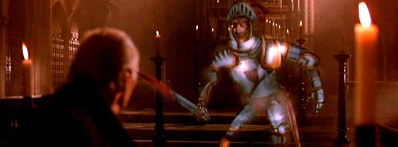
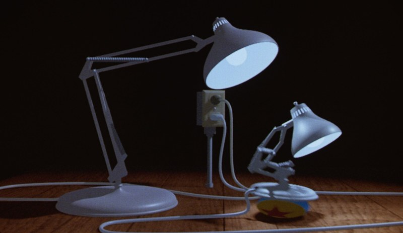
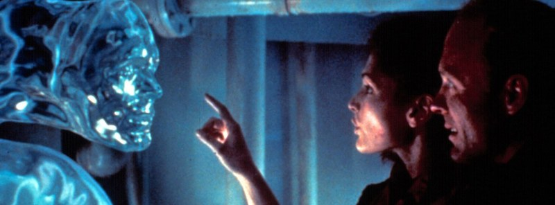
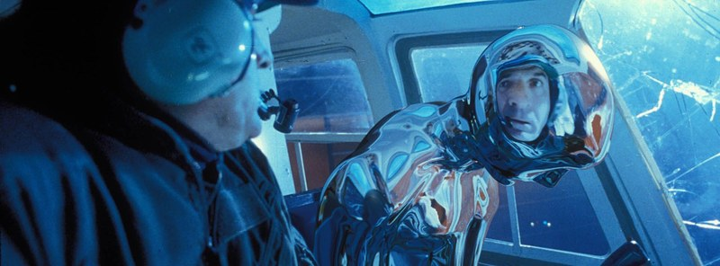
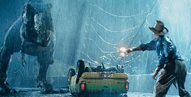
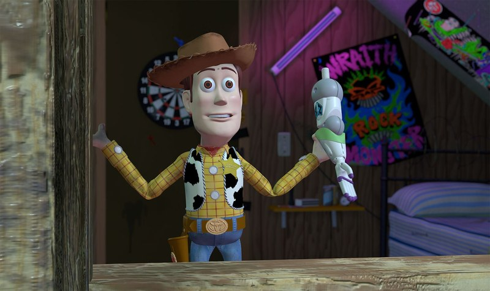
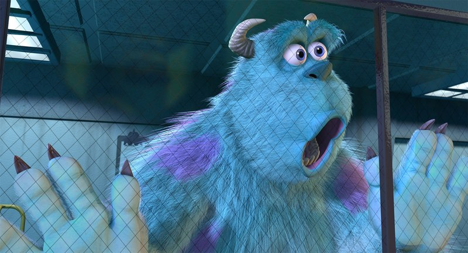
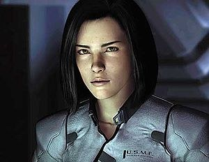
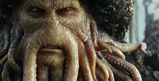
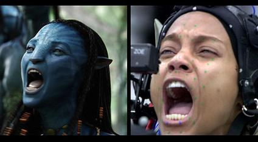
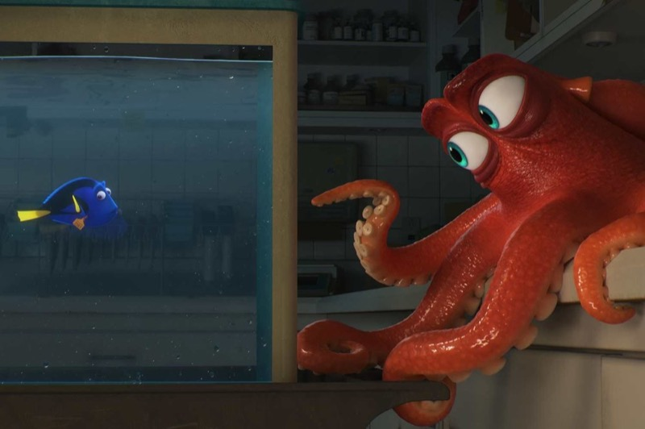
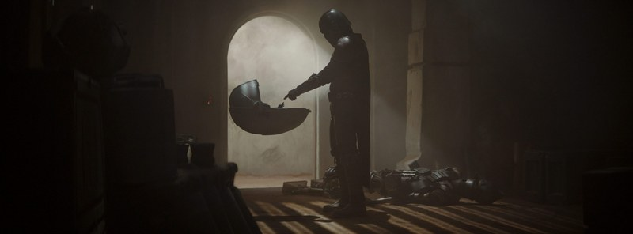
Disputed firsts
- First 3D CG in a feature. Futureworld (1976) is the usual answer; one participant’s history gives Star Wars (1977) for 3D wireframe and Looker (1981) for shaded 3D.
- First entirely computer-generated sequence. The Genesis sequence (1982) is often called the first; the Computer History Museum says “one of the earliest,” and the makers’ own accounts claim no first.
- First CG character. ILM credits the stained-glass knight (1985); Tron’s Bit (1982) is the other candidate. A Lucasfilm text also calls the Abyss pseudopod (1989) the first wholly computer-generated character, which conflicts with both.
- First computer-animated Oscar nominee. Hunger (National Film Board of Canada), a 2D computer-animated short, was nominated in 1975, so Luxo Jr. is the first 3D nominee.
- Bullet time. Time-slice photography with camera arrays predates The Matrix by more than a decade.
- Tron and the effects Oscar. The story that the Academy ruled computer effects “cheating” rests on later anecdote; the film’s nominations were for costume design and sound.
Sources
- Wayne Carlson, Computer Graphics and Computer Animation: A Retrospective Overview, Ohio State University, 2017, chapters 5, 6, 8, 11 and 14.
- Academy of Motion Picture Arts and Sciences, ceremony pages (oscars.org/oscars/ceremonies) and Scientific and Technical Awards pages.
- John Whitney Jr., “Creating the Special Effects for Westworld,” American Cinematographer, Nov. 1973; Alvy Ray Smith, “Special Effects for Star Trek II: The Genesis Demo,” American Cinematographer 63(10), Oct. 1982; Smith, Pixar founding documents.
- Gary Demos, Maxine Brown, Richard Weinberg, “Digital Scene Simulation,” Proceedings of the IEEE 72(1), 1984; Demos, “My personal history in the early explorations of computer graphics,” The Visual Computer 21(12), 2005.
- Per Christensen and Wojciech Jarosz, “The Path to Path-Traced Movies,” Foundations and Trends in Computer Graphics and Vision 10(2), 2016; the 2018 ACM Transactions on Graphics papers on RenderMan, Arnold, Hyperion and Manuka.
- Studio pages: ilm.com, pixar.com, renderman.pixar.com, wetafx.co.nz, framestore.com, dneg.com, digitaldomain.com; company filings with the U.S. Securities and Exchange Commission for the Lucasfilm, Pixar, Alias and Softimage acquisitions; trade press (Animation World Magazine, Variety, Deadline, Computer Graphics World).